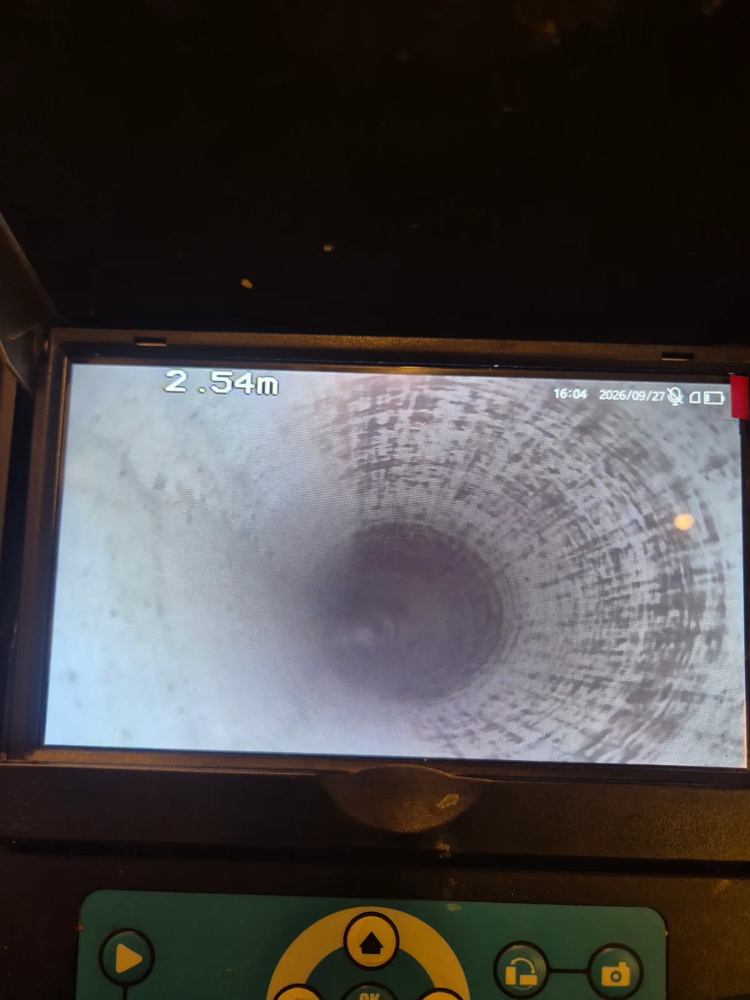

중구 순화동 싱크대막힘, 현장 도착 후 진단
신라건축설비가 방문한 곳은 서울 중구 순화동의 아파트입니다. 싱크대가 막혀 배관 안쪽을 확인하게 됐습니다.
싱크대 위에서는 물이 잘 내려가지 않는 것만 보이지만, 아래쪽 사정은 직접 살펴봐야 알 수 있죠. 배관 내시경을 넣어보니 이물질이 두껍게 쌓여 있었습니다. 물이 다녀야 할 자리를 제법 넓게 차지하고 있더군요.
화면에는 오염물이 배관 안쪽으로 튀어나와 통로를 좁히는 모습이 보였습니다. 왜 배수가 답답했는지, 배관 안을 보니 이해가 됐습니다.
1단계: 증상 확인과 필요한 장비 작업
내시경으로 이물질이 쌓인 위치와 통로가 좁아진 부분을 살폈습니다. 배수구 가까이에만 문제가 있는지, 연결된 배관 안쪽까지 작업이 필요한지 확인하는 과정입니다.
이번 현장은 배관 내부에 붙은 오염물을 제거해야 했습니다. 눈에 보이는 배수구의 찌꺼기를 치우는 것만으로는 안쪽에 쌓인 이물질까지 정리하기 어려운 상태였죠. 그래서 샤프트를 이용한 배관스케일링을 진행하기로 했습니다.

2단계: 원인 구간 처리와 정상 작동 확인
배관 안으로 샤프트를 넣어 스케일링을 진행했습니다. 배관스케일링은 안쪽에 붙어 통로를 좁히는 오염물을 제거하는 작업입니다. 회전하는 샤프트 작업부로 쌓인 이물질을 떨어뜨리며 내부를 정리했습니다.
배관 안에서 자리를 차지하고 있던 이물질도 이제는 나가줘야죠. 내시경으로 확인했던 오염물을 제거하면서 물이 지나갈 공간을 확보했습니다.
작업을 마친 뒤에는 내시경으로 안쪽을 다시 살폈습니다. 밖에서는 볼 수 없는 배관 내부를 작업한 만큼, 오염물이 있던 자리가 어떻게 달라졌는지 확인하며 마무리했습니다.

작업 결과와 재발 방지 안내
이번 순화동 아파트 싱크대막힘은 샤프트로 배관 내부의 이물질을 제거해 해결했습니다. 작업 전에는 오염물에 가려 있던 배관 벽과 통로가 작업 후 내시경 화면에 드러났습니다. 무엇 때문에 막혔고, 작업하면서 어떻게 달라졌는지 전후 사진으로 확인할 수 있는 현장이었습니다.
집에서 싱크대 물이 천천히 내려간다면 먼저 거름망과 배수구에 보이는 찌꺼기를 제거해보세요. 그런데도 배수가 계속 답답하다면 연결된 배관 안쪽에 이물질이 쌓였는지 확인할 필요가 있습니다. 물을 사용할 때 하부에서 역류한다면 사용을 멈추고 점검받는 것이 좋습니다.
평소에는 음식물 찌꺼기를 거름망에서 걸러 버리고, 그릇이나 프라이팬에 남은 기름을 닦아낸 뒤 설거지하는 습관이 도움이 됩니다. 배관으로 들어가는 찌꺼기를 줄이는 것이 예방의 시작입니다.
신라건축설비는 서울·경기권 아파트 싱크대막힘 현장에서 원인과 작업 범위를 확인하고, 배관 상태에 맞는 방법으로 해결합니다.
최종 조치: 샤프트로 배관 내부에 쌓인 이물질을 제거하고, 작업 후 내시경으로 내부 상태를 다시 확인했습니다.
현장 방문 전 확인하는 비용과 작업 범위
신라건축설비는 현장 증상과 배관 구조를 확인한 뒤 필요한 작업과 예상 비용을 안내합니다. 단순 관통으로 해결되는지, 배관내시경·석션·고압세척 또는 추가 장비가 필요한지는 현장 상태에 따라 달라집니다. 출장비와 야간 작업비, 추가 장비 비용이 발생할 수 있는 경우 작업 전에 먼저 설명하고 동의를 받은 범위에서 진행합니다.
업체를 선택할 때 확인할 사항
무조건적인 ‘0원’ 표현보다 실제 작업 범위, 추가 비용 조건, 사용 장비와 사후 대응 기준을 확인하는 것이 중요합니다. 해결되지 않았을 때의 비용 기준과 작업 후 동일 증상 발생 시 점검 범위를 사전에 문의해두면 불필요한 분쟁을 줄일 수 있습니다.
중구 싱크대막힘 자주 묻는 질문
싱크대막힘은 왜 반복되나요?
중구 순화동 현장처럼 아파트 싱크대에서 물이 원활하게 내려가지 않아 사용에 불편이 발생했습니다. 증상은 원인이 현장마다 다를 수 있습니다. 주방 배수관 내부에 기름때·슬러지·음식물 찌꺼기가 누적되거나 배관 구배와 긴 횡주관 때문에 반복될 수 있습니다. 단순 관통 후 다시 막힌다면 배수관 내부 상태를 확인하는 것이 좋습니다.
싱크대 물이 안 내려가거나 역류하면 싱크대뚫는업체를 불러야 하나요?
물이 천천히 빠지거나 싱크대역류가 반복되면 배수구 입구보다 안쪽 주방 배관에 막힘이 있을 수 있습니다. 현장에서는 배수 상태와 막힌 구간을 확인한 뒤 작업 방법을 정합니다.
싱크대 기름때 막힘은 약품으로 해결되나요?
가벼운 오염은 일시적으로 나아질 수 있지만 굳은 기름 슬러지와 배관 내부 스케일은 약품만으로 충분히 제거되지 않는 경우가 있습니다. 반복 막힘은 장비를 이용한 배관 청소가 필요할 수 있습니다.
싱크대뚫는업체는 어떤 장비로 작업하나요?
막힘 위치와 배관 상태에 따라 석션, 샤프트, 배관내시경, 배관 스케일링 장비 등을 사용합니다. 필요한 장비는 현장 진단 후 결정합니다.
싱크대막힘 비용은 어떻게 정해지나요?
막힘 구간의 길이와 오염 정도, 석션·샤프트·내시경 등 장비 투입 범위에 따라 달라질 수 있습니다. 작업 전 예상 범위와 추가 비용 조건을 먼저 안내합니다.
싱크대 악취도 배수관 막힘과 관련 있나요?
기름 슬러지와 음식물 오염이 배수관 내부에 쌓이면 배수 불량과 함께 악취가 나타날 수 있습니다. 다만 트랩이나 연결부 문제도 있어 현장 상태를 함께 확인해야 합니다.
싱크대막힘 서울·경기 출동지역
신라건축설비는 중구 순화동 현장을 포함해 서울 25개 구와 경기도 31개 시·군의 배관 문제를 상담합니다. 현장 거리와 기사 배정 상황에 따라 출동 가능 여부를 먼저 안내드립니다.
서울 전 지역
강남구 · 강동구 · 강북구 · 강서구 · 관악구 · 광진구 · 구로구 · 금천구 · 노원구 · 도봉구 · 동대문구 · 동작구 · 마포구 · 서대문구 · 서초구 · 성동구 · 성북구 · 송파구 · 양천구 · 영등포구 · 용산구 · 은평구 · 종로구 · 중구 · 중랑구
경기도 주요 출동지역
수원시 · 용인시 · 고양시 · 화성시 · 성남시 · 부천시 · 남양주시 · 안산시 · 평택시 · 안양시 · 시흥시 · 파주시 · 김포시 · 의정부시 · 광주시 · 하남시 · 광명시 · 군포시 · 양주시 · 오산시 · 이천시 · 안성시 · 구리시 · 의왕시 · 포천시 · 양평군 · 여주시 · 동두천시 · 과천시 · 가평군 · 연천군